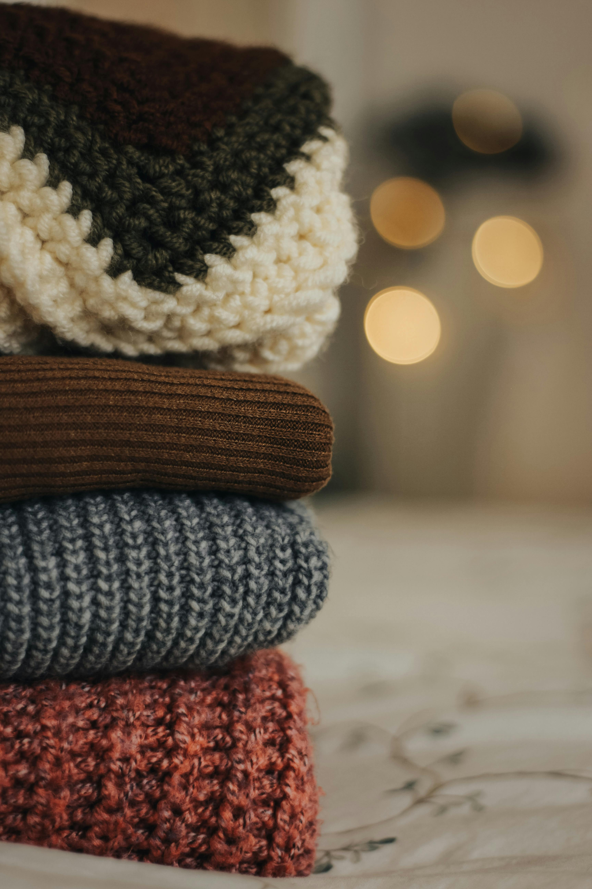
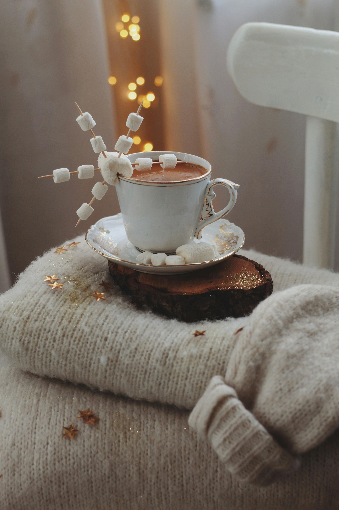
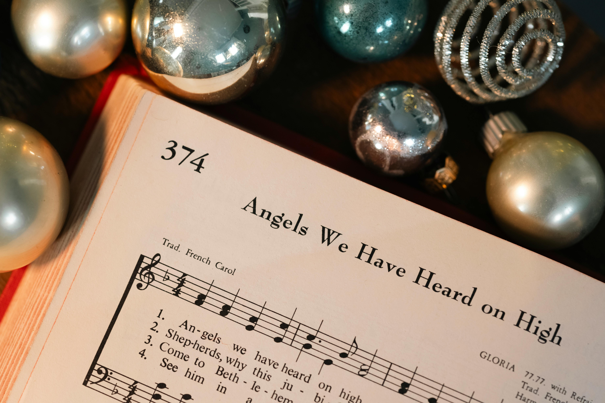

겨울 옷
두꺼운 패딩과 목도리만으로는 아쉬운 겨울 패션!
이번 글에서는 체온을 지키면서도 스타일을 살릴 수 있는 겨울 필수 아이템을 소개합니다.
"올겨울, 당신의 패션 지수를 높여줄 다섯 가지 비밀 무기"가 궁금하지 않으세요?
보온성과 세련미를 모두 챙기는 방법을 알아보세요.
→ '옷' 바로가기

겨울 간식
추운 날씨에 딱 어울리는 간식, 어떤 게 떠오르시나요?
군고구마와 붕어빵부터 따뜻한 핫초코까지, 겨울철에 꼭 즐겨야 할 간식 리스트를 준비했습니다.
"겨울이면 더 맛있어지는 간식들의 비밀 레시피"를 확인하고, 직접 만들어보는 재미까지 놓치지 마세요!
→ '간식' 바로가기

겨울 음악
따뜻한 차 한 잔과 함께 듣기 좋은 음악은 겨울의 낭만을 더해줍니다.
이번 글에서는 한겨울의 고즈넉함을 느낄 수 있는 감성적인 음악부터 활력을 북돋아줄 신나는 겨울 노래까지, 다양한 분위기의 추천 곡들을 모아봤어요.
"겨울날의 설레는 순간을 위한 음악들"을 함께 들어보세요.
→ '음악 바로가기
겨울 여가
겨울이면 겨울에만 할 수 있는 여가 생활을 즐겨야죠!
겨울 스포츠 또는 특별한 경험을 만들어 줄 다양한 여가 아이디어를 소개합니다.
실내와 실외에서 즐길 수 있는 여러 경험을 통해 올겨울을 더욱 풍성하게 만들어보세요.
→ '여가' 바로가기